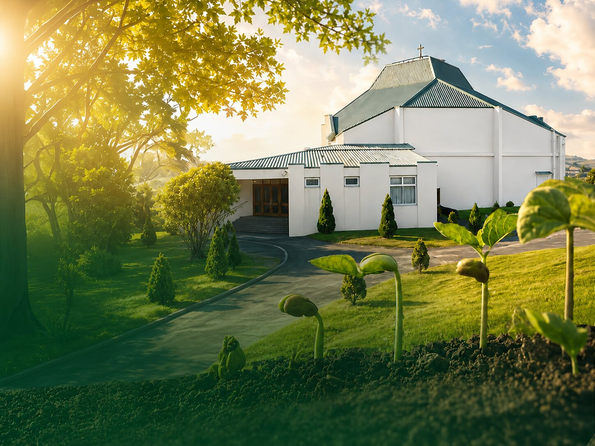

"We are building a church our community can call home. A place to worship, to belong, and to pass our faith on to the children who come after us."
The Seeds of Hope campaign is about more than purchasing a building. It is about creating a permanent home where faith can flourish, communities can gather, children can learn, and service to others can continue to grow.
"Each of you should give what you have decided in your heart to give, not reluctantly or under compulsion, for God loves a cheerful giver."
We also envision a center from which we can continue serving the wider Wellington community through acts of charity, compassion, and outreach.
Establish a dedicated church home where our community can gather, worship, and grow together in faith for generations to come.
Support families through food drives, prayer groups, and pastoral care, extending beyond church walls to embrace the wider Wellington community.
Nurture the next generation through catechism, youth groups (SMYM), and leadership programs that build character and faith.
Deepen spiritual roots through Bible study groups, prayer meetings, and sacramental preparation programs for all ages.
Every contribution brings us closer to our dream of having a church home. Your generosity helps us build a place where faith can flourish for generations to come.